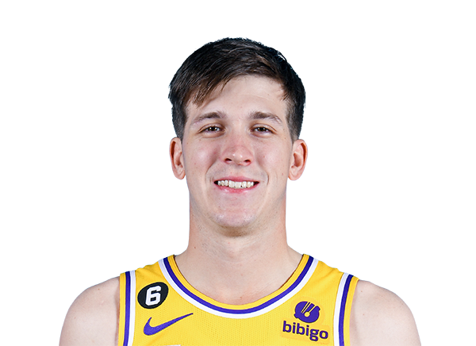

Jugadores Importantes
Conoce al equipo:
D'Angelo Russell
Base

Austin Reaves
Escolta

LeBron James
Alero
Anthony Davis
Pivot
Crypto.com Arena
Conoce al equipo:
Base
Escolta
Alero
Pivot
Los Angeles Lakers son un equipo profesional de baloncesto de los Estados Unidos con sede en Los Ángeles, California. Compiten en la División Pacífico de la Conferencia Oeste de la National Basketball Association (NBA) y disputan sus partidos como locales en el Crypto.com Arena, ubicado en el downtown de la ciudad. Campeones de la NBA en 17 ocasiones, están empatados en el palmarés de la NBA, con los Boston Celtics.
Nacida en Santa Monica el 26 de Septiebmre de 1961.Es una emprendedora y ejecutiva estadounidense.Es la propietaria mayoritaria del equipo de baloncesto profesional de Los Angeles Lakers, una franquicia de la National Basketball Association (NBA).
Robert Todd Pelinka Jr (nacido el 23 de diciembre de 1969) es un ejecutivo de baloncesto estadounidense, abogado, agente deportivo y ex jugador de baloncesto universitario de Lake Bluff, Illinois (suburbios de Chicago). Pelinka es actualmente vicepresidente de operaciones de baloncesto y gerente general de Los Angeles Lakers de la Asociación Nacional de Baloncesto (NBA).

Darvin Ham (23 de julio de 1973; Saginaw, Míchigan) es un exjugador y entrenador estadounidense que jugó 8 temporadas en la NBA. Con 2,01 metros de estatura, jugaba en la posición de alero. Desde 2022 es entrenador principal de Los Angeles Lakers.
Chase Center
Conoce al equipo:

Base
Alero
Alero

Pivot
Los Golden State Warriors son un equipo profesional de baloncesto de los Estados Unidos con sede en San Francisco, California. Compiten en la División Pacífico de la Conferencia Oeste de la National Basketball Association (NBA) y disputan sus partidos como locales en el Chase Center, ubicado en el barrio sanfranciscano de Mission Bay.
Joseph Steven Lacob (nacido el 10 de enero de 1956) es un ejecutivo empresarial estadounidense, socio de Kleiner Perkins y propietario mayoritario de los Golden State Warriors de la Asociación Nacional de Baloncesto (NBA).

Robert Michael Myers (nacido el 31 de marzo de 1975) es un ejecutivo de baloncesto, presidente de operaciones de baloncesto y director general de los Golden State Warriors de la Asociación Nacional de Baloncesto (NBA). Es un ex agente deportivo de Wasserman Media Group después de hacer una pasantía con el agente Arn Tellem. Myers jugó baloncesto universitario para los UCLA Bruins de 1993 a 1997. Fue miembro de su equipo campeón de la NCAA de 1995. Se desempeñó como comentarista de radio para el baloncesto de UCLA durante dos temporadas hasta 2002.
Stephen Douglas "Steve" Kerr (Beirut, Líbano, 27 de septiembre de 1965) es un exjugador de baloncesto estadounidense y actual entrenador de los Golden State Warriors de la NBA. Con 1,91 metros altura, jugaba en el puesto de base/escolta. Como jugador fue campeón de la NBA en 5 ocasiones en dos equipos diferentes (Chicago Bulls y San Antonio Spurs) y como entrenador ha conseguido 4 títulos con los Golden State Warriors.
American Airlines Center
Conoce al equipo:

Base

Escolta
Alero
Pivot
Los Dallas Mavericks, a menudo conocidos con la abreviatura Mavs, son un equipo profesional de baloncesto de los Estados Unidos con sede en Dallas, Texas. Compiten en la División Suroeste de la Conferencia Oeste de la National Basketball Association (NBA) y disputan sus partidos como locales en el American Airlines Center.

Mark Cuban (Pittsburgh, Pensilvania, 31 de julio de 1958) es un empresario estadounidense, inversor y dueño de los Mavericks de Dallas de la NBA. También es propietario de la empresa de cine y entretenimiento 2929 Entertainment. Es conocido por ser un inversor en la serie Shark Tank. En 2011, Mark escribió un libro titulado "Cómo ganar en el deporte de los negocios", en el que describe crónicas de sus experiencias en los negocios y en los deportes.
Nico Tyrone Harrison (nacido el 28 de diciembre de 1972) es un ejecutivo de baloncesto profesional estadounidense de la Asociación Nacional de Baloncesto (NBA), que actualmente es presidente de operaciones de baloncesto y director general de los Dallas Mavericks.
Jason Frederick Kidd (San Francisco, California, 23 de marzo de 1973) es un entrenador y exjugador de baloncesto estadounidense que en la actualidad entrena al equipo de la NBA Dallas Mavericks. Como jugador disputó 19 temporadas en la NBA. Con 1,93 metros de altura jugaba en la posición de base. En 2011 ganó el campeonato de la NBA con Dallas Mavericks, es el segundo máximo asistente de la historia de la NBA y en 2018 fue incluido en el Basketball Hall of Fame.

FedExForum
Conoce al equipo:
Base
Escolta

Alero
Ala-Pivot
Los Memphis Grizzlies son un equipo profesional de baloncesto de los Estados Unidos con sede en Memphis, Tennessee. Compiten en la División Suroeste de la Conferencia Oeste de la National Basketball Association (NBA) y disputan sus partidos como locales en el FedExForum.
Robert J. Pera (nacido el 10 de marzo de 1978) es el fundador de Ubiquiti Networks, Inc., una empresa global de tecnología de comunicaciones que Pera hizo pública en 2011. En octubre de 2012, Pera también se convirtió en propietario de los Memphis Grizzlies de la Asociación Nacional de Baloncesto. . A la edad de 36 años, Pera se ganó un lugar en la lista de Forbes de los 10 multimillonarios más jóvenes del mundo.
Jason Wexler inicia su séptima temporada con los Memphis Grizzlies y FedExForum y la segunda como presidente. Wexler tiene la responsabilidad de liderazgo en Operaciones Comerciales y Operaciones de Baloncesto. Wexler fue anteriormente presidente de operaciones comerciales y se unió a la organización como director de operaciones en abril de 2013.
Taylor Jenkins (Arlington, Texas; 19 de septiembre de 1984) es un entrenador de baloncesto estadounidense que actualmente dirige al los Memphis Grizzlies de la NBA.